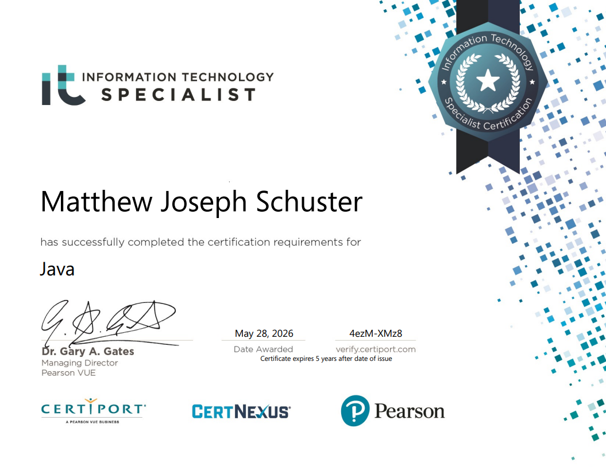
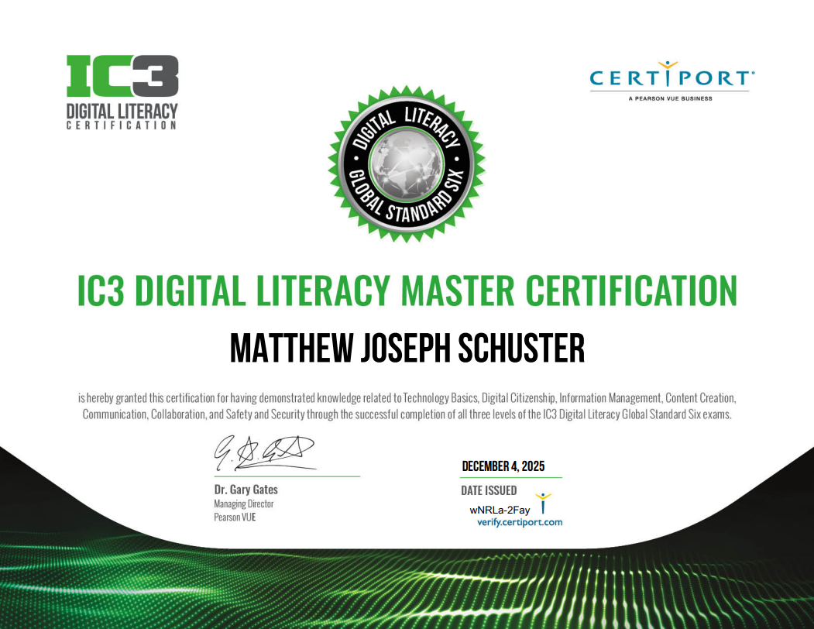
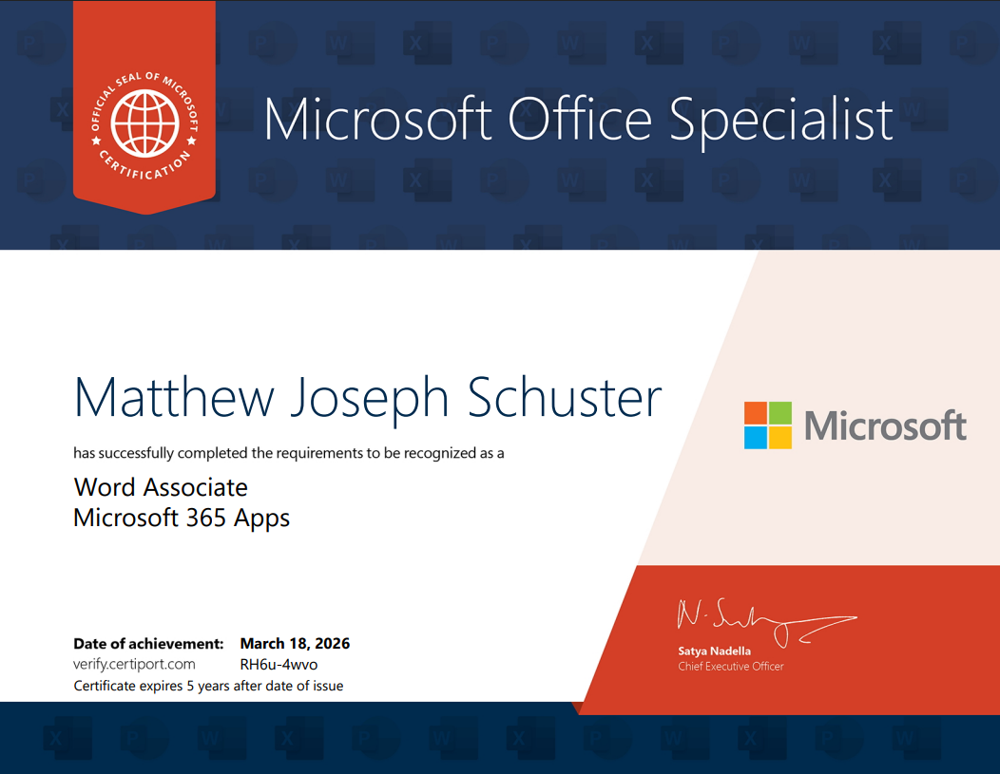
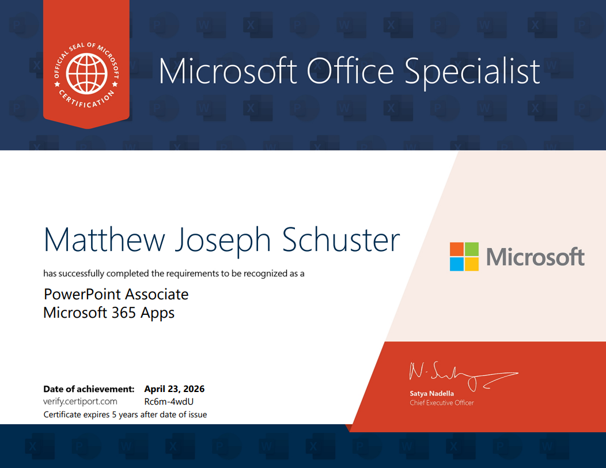

Hello, My name is Matthew Schuster. I am currently a senior at Cuyahoga Vally Career Center (CVCC) and Brecksville Broadview Heights High School (BBHHS). At CVCC I am in the class Programing and Software Development (PSD). At the high school my rounded GPA is 3.4. I am planning on going to college at both Cuyahoga Community College (Tri-C) and either Kent State University (KSU), or Baldwin Wallace University (BW). I want to do the 2+2 program which means I will spend 2 years at Tri-C and 2 years at either KSU or BW. I do not know yet what job I want to end at but I do know I want to create software. I can be a fast learner and I always try to do everything I can to finish everything I start to the best of my ability. My junior year of high school I went to states for the Bisness Professionals of America (BPA) Java Competition.
My Certifications are:




My Hobbies are...
- Video Games Like:
- Hollow knight
- Hollow knight is a metroidvania made in 2018 where you explore through the dead kingdom of Hallownest. You can go through the game however you want and no two playthroughs will be the same. As you go through the game you will collect abilities, find secrets and fight bosses.
- Terraria
- Terraria (wrongfully called 2D minecraft by many) is a 2D action adventure sandbox survival game. The main focus of the game can be anything you want. My favorite part of the game are the bosses. When you play the game you will stumble upon powerful items, wepons, armor, and what I mentioned before the bosses. This game also probably has the best mods of any game.
- Oneshot
- Hollow Knight used to be my favorite game but now it is OneShot. Oneshot is a RPG where you go through a dying world to restore the sun. It is one of if not the most unique games I have ever seen.
- Slay the Spire 2
- Slay The Spire 2 is a Deckbuilder roguelike. You start at the bottom of the spire and you want to get to the top. As you do your run you will find powerful enemies and bosses, but you will also find incredably powerful cards and relics.
- Risk of rain 2
- Risk of Rain 2 is a roguelike. When you play the game, the first thing that typically happens is you hit the planet with ans escape pod and you get out of it. from there the basic but incredably fun gameplay loop is kill enemies, get money, open chests, hit the teleporter, and repeat until you get to the moon.
- Some Sports/Physical Activities:
- Soccer
- Basketball
- Going on walks
- Working out
- Hanging out with friends